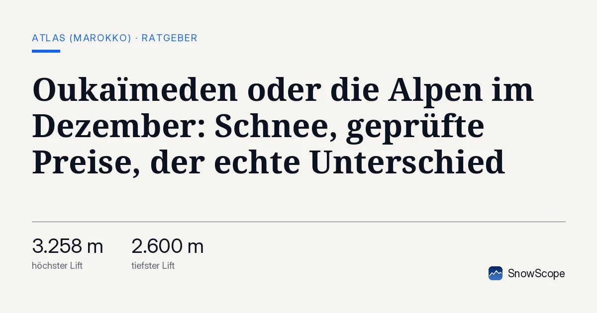

Oukaïmeden oder die Alpen im Dezember: Schnee, geprüfte Preise, der echte Unterschied
An einem typischen 15. Dezember liegen in Oukaïmeden 16 cm Schnee auf Mittelhöhe, während Val Thorens 89 cm und Chamonix 65 cm erreichen. Wir fanden keinen offiziellen Online-Tarif für Oukaïmeden, daher verglichen wir, was wir überprüfen konnten: 46 Winter Schneegeschichte und die aktuellen Liftpreise aus den Alpen.
Die Live-Schneeprognose für Oukaïmeden in der SnowScope-AppSchneehöhen, Pulverschnee-Alarme und 3D-Karte, gratis.
Schneehöhe Anfang Dezember über drei Gebirgsregionen
Am 15. Dezember in einem typischen Winter ändert sich die Situation deutlich je nach Höhe und Lage. Oukaïmeden (2.929 m) hält nur 16 cm, und nur eines von neun Wintern erreicht 50 cm. Val Thorens (2.498 m), niedriger als Oukaïmeden, zeigt 89 cm, wobei die Hälfte aller Winter 50 cm oder mehr hat. Chamonix Grands Montets (2.001 m), noch niedriger, registriert im typischen Dezember 65 cm.
Die Höhen erzählen die Geschichte. Auf dem Gipfel von Val Thorens (3.175 m) findest du am 15. Dezember 159 cm. Auf Chamonix' Gipfel (2.768 m) 157 cm. Oukaïmediens Spitze (3.258 m) erreicht 17 cm. Der Atlas erhält im Dezember weniger Feuchtigkeit; die Alpen werden von atlantischen Stürmen getroffen und profitieren von ihren höheren Mittelhöhen. Für Dezember-Skifahrer bieten die Alpen eine viel zuverlässigere Schneedecke.

Was gute Chancen auf Schneebedeckung wirklich bedeuten
Am 15. Dezember haben vier von fünf Wintern in Val Thorens 50 cm oder mehr. In Chamonix sind es drei von fünf. In Oukaïmeden nur eines von neun. Das zählt, wenn du eine Woche im Voraus buchst: die Alpen garantieren dir bis Mitte Dezember fahrbaren Schnee; der Atlas nicht. Der Unterschied wird bis Weihnachten größer. Am 25. Dezember überschreiten 93 % der Winter in Val Thorens 50 cm, gegenüber nur 13 % in Oukaïmeden auf Mittelhöhe.
Lifttickets: was wir überprüfen können
Val Thorens bietet Klarheit. Der Tagespass Les 3 Vallées für Erwachsene kostet 75,70 Euro vom 5. bis 18. Dezember 2026 (Nebensaison), dann 84,20 Euro ab 19. Dezember. Chamonix Mont-Blanc Unlimited kostet zwischen 75 und 104 Euro pro Tag zwischen 28. November und 18. Dezember, mit Preiserhöhung jede Woche.
Oukaïmeden hat keinen offiziellen Online-Tarif ab 13. November 2026. Tickets und Ausrüstungen werden vor Ort geklärt. Wir veröffentlichen keinen Preis, statt zu raten. Für einen europäischen Skifahrer erhöht die fehlende Preissicherheit das Buchungsrisiko.
Wo die echten Ersparnisse liegen
Wenn du in Marrakesch wohnst, ist Oukaïmeden 50 km entfernt: kein Flug, keine Woche Ausrüstung, kein Hotel weit weg von zuhause. Für einen Einheimischen ist das ein echter Vorteil. Für einen Europäer ersetzt der Flug nach Marokko den Flug nach Frankreich und kostet ähnlich viel. Der Ticketpreis zählt weniger als die Schneewahrscheinlichkeit: 75 Euro für 89 cm zu zahlen ist besseres Geld als nichts zu zahlen und Steine zu finden.
Wann Oukaïmeden Sinn macht
Dezember ist früh im Atlas-Zyklus. Februar und März sind die Top-Monate: Mittelhöhe durchschnittlich 44 cm im Februar und 53 cm im März, wobei die Hälfte der Winter 50 cm oder mehr erreicht. Ein Dezember-Trip funktioniert am besten als kurzer Ausflug von Marrakesch nach neuen Schneefällen, nicht als Urlaubsbuchung Monate im Voraus. Die Alpen hingegen halten Dezember-Skifahrer mit zuverlässiger Mittelhöhen-Tiefe und höheren Gipfeln sicherer.
Tipps für Skifahrer
- Alpen vor 19. Dezember: buche die Nebensaison-Rate Les 3 Vallées in Val Thorens für garantierten Mittelhöhen-Schnee bei typisch 89 cm.
- Chamonix: Preise steigen durch Dezember; buche früh für den 75-Euro-Frühsaison-Tarif, wenn du dich vor 18. Dezember festlegen kannst.
- Oukaïmeden: behandle es als Last-Minute-Tagesausflug von Marrakesch nach einem Sturm, nicht als Wochenbuchung. Frag die Liftpreise bei Ankunft.
- Für eine europäische Ski-Woche im Dezember bieten die Alpen bessere Chancen als der Atlas. Plane Oukaïmeden stattdessen für Februar oder März.
- Schau die SnowScope Schneekarte die Woche vor deiner Reise an; die Bedingungen variieren im Atlas viel mehr als in den Alpen.
Zu diesen Zahlen
Die Schneehöhen der Skigebiete sind der meiste Schnee in den oberen Hängen am angegebenen Tag; es sind Schätzungen für eine Fläche, keine Messung an einem Punkt. Prognosen können sich ändern. Lies vor dem Freeriden immer den offiziellen Lawinenlagebericht.
Diesen Bericht zitieren
Für Forschung, Lehre oder Presse: Zahlen und Grafiken sind unter CC BY 4.0 mit dieser Quellenangabe frei nutzbar.
SnowScope (2026), Oukaïmeden oder die Alpen im Dezember: Schnee, geprüfte Preise, der echte Unterschied, https://snowscope.app/blog/de/2026/11/oukaimeden-ou-alpes-week-end-ski-decembre-prix.html, abgerufen am 2026-11-14
SnowScope (Atlas Labs). (2026, November 14). Oukaïmeden oder die Alpen im Dezember: Schnee, geprüfte Preise, der echte Unterschied. SnowScope snow reports. https://snowscope.app/blog/de/2026/11/oukaimeden-ou-alpes-week-end-ski-decembre-prix.html
BibTeX
@misc{snowscope2026oukaimedenoualpesweekend,
author = {{SnowScope (Atlas Labs)}},
title = {Oukaïmeden oder die Alpen im Dezember: Schnee, geprüfte Preise, der echte Unterschied},
year = {2026},
month = nov,
howpublished = {\url{https://snowscope.app/blog/de/2026/11/oukaimeden-ou-alpes-week-end-ski-decembre-prix.html}},
note = {Published 2026-11-14 13:29 UTC; accessed 2026-11-14}
}· CC BY 4.0 · Methoden, Daten und Werkzeuge →
Oukaïmeden: Schnee und Temperatur nach Höhe, dieser Winter vs letzter (Werkzeuge) →
Oukaïmeden folgen
Gratis: eine Nachricht, wenn Neuschnee kommt, und jeden Morgen die Vorhersage.
Weitere Schneeberichte

Der Dezember bringt nur 18 cm typische Schneehöhe auf Mittelhang in Oukaimeden, gegenüber 53 cm im März. Die Frühjahrsaison ist dünn, aber möglich. Daten 13. November 2026.

Die Skigebiete im Atlas haben heute keinen Schnee auf den Pisten. SnowScope findet nur auf den höchsten Gipfeln Schnee: etwa 80 km² …